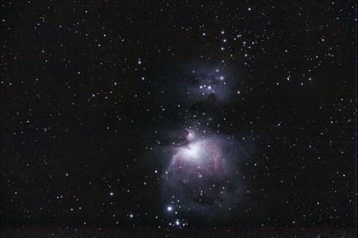
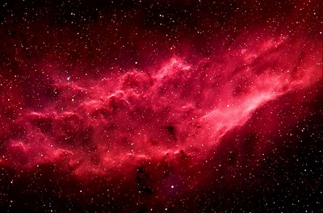
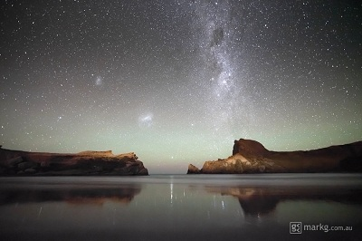
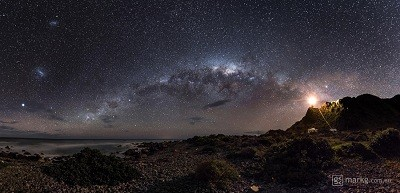
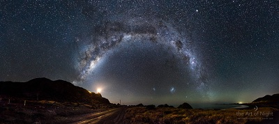

Astrophotography is a fancy term for photography of astronomical objects (planets, stars, nebulae, galaxies, etc.). Those incredible pictures you’ve seen of the Milky Way or the rings of Saturn, that’s astrophotography. Many amateur astronomers quickly become interested in astrophotography as a way to enhance their astronomical viewing sessions. This is because specialized astrophotography techniques actually enable you to get better views of the night sky than what is achievable just by looking through a telescope. Take a look at the image below of the Orion Nebula (a personal favorite).

The first thing to consider with astrophotography is, “what is a photograph?” In simple terms, a photograph is a recording of light particles, or photons, that form an image. Whether it’s with film or
digital, the photons that make it through the aperture of the camera to the sensor or film are recorded for later display. The more photons that are recorded in any area of an image, the “brighter” that
area will later be displayed. For the purpose of iAstrophotography, we’re going to focus on the digital photography world here.There are two key terms are important to understand when it comes to
capturing those photons. The first is exposure. Exposure can basically be thought of as the amount of time you allow those photons to impact your camera’s sensor. Naturally, the longer you allow
photons to hit your sensor, the more photons you will capture, thus the brighter the image will appear. Long exposure images are very helpful for astrophotography, because we are trying to pickup
very fine details in a low light environment. However, for long exposure images to provide crisp detail, the camera must remain very still, and we must eliminate motion in the field of view (with a
tracking mount for astrophotography).The second term to understand is ISO. ISO is essentially a measurement of your camera’s sensitivity to light. This is a setting which is typically adjustable on a
digital camera or to some extent on a smartphone. Lower ISO means less light sensitivity, and vice versa. Thus, for astrophotography, we often rely on high ISO image capture. That said, if the ISO is
too high, it can lead to unwanted “noise” in the image.Astrophotography can be done with any camera, but using a telescope creates a natural advantage over regular photography. If you recall from
the astronomy terminology page, one of the main functions of a telescope is to function as a light collector. All of the photons that are captured through the large aperture of the scope are then
condensed and focused into the viewer using mirrors and/or lenses. In this same way, connecting a camera to a telescope will produce greater light sensitivity for astrophotography than using the
camera alone.So, using a telescope, we can take astrophotographs with great light sensitivity. However, to turn these into the magnificent astrophotographs you’re used to seeing in various
publications, some extra work is required. We won’t get into the fine details here, but the high level principle is that multiple images of the same exact portion of space can be digitally combined one
on top of the other to enhance the signal-to-noise ratio using some specialized software. The end result is an astrophotograph with even more detail than you perceive when looking through the
telescope.
iAstrophotography is just what it sounds like – astrophotography with an iPhone. While the camera may have some limitations compared to a DSLR, the form factor allows for excellent composition.
Plus it’s always with you and incredibly easy to experiment with.Rather than dole out the cash for a fancy new DSLR camera to go along with my fancy new telescope, I’ve decided to try and perfect
the technique of using my iPhone for astrophotography, hence iAstrophotography. There are a few other astrophotography sites on the web with a page or a blog post talking about iPhone
Astrophotography.

Types of Astrophotography
There are various types of astrophotography which you can pursue:
Deep Space – Images which are taken with use of a telescope of objects beyond our own solar system. These are those stunning images you see of distant galaxies and nebulae, and this is the most technical and hardest form of astrophotography.
Solar System – These are images of the planets, moons and the sun of our own solar system. Again the images are mostly photographed through telescopes, but a super telephoto lens on a DSLR cameras can also give you a good result.
Wide Field Astrophotography – This is astrophotography that is taken with a DSLR camera and lens with a wide field of view, like the wide-angled lens. These are the images you see that include a starry sky or star trails above a landscape. This is the most accessible form of astrophotography, and are the kind I practice and will be teaching you about.
Time-Lapse Astrophotography – This is just an extension on Wide Field Astrophotography. The only difference is you take lots of exposures over time and then combine the frames to make a time-lapse video. The same technique can be used to make a star trail image.

Gear Guide
In the modern age of digital photography, wide field astrophotography is now within almost anyone’s reach. Equipment-wise , all you need is a modern DSLR camera with good low light capabilities, a fast lens and a good sturdy tripod. This will get you out there taking good quality night sky images.
Beyond that you can also add to the kit with additional accessories that will allow you to do a little more, like an intervalometer , which will allow you to do time-lapses and star trails. Of course you can go out and accumulate a whole lot of other specialised equipment ,like equatorial mounts which follow rotation of the night sky, and robotic camera mounts for capturing large panoramic images, but for now we’ll concentrate on the basics.
DSLR Camera – the modern day Digital Single Lens Reflex Camera can have great low light capabilities, and it’s these cameras that are perfect for astrophotography. Ideally you want a full framed sensor camera like the Canon 5d MkII and MkIII and the Canon 6D , or the Nikon D600 , as you need to have the maximum sensor area to capture as much light information as possible. But you can also get reasonable results with crop sensor cameras like the Canon 7dor the Nikon D7100 , which may suit your budget a little more than the full framed counterparts.
Lenses – when shooting the stars you want a lens with a large aperture to allow as much light as possible through the lens. Ideally a maximum aperture of at least f/2.8 is best, but you could still get good result with a f/4.0 lens. Unfortunately , the larger the aperture the more expensive the lens, but you can get good alternate brand lenses a lot cheaper than the Canon’s and Nikon’s. The good thing about astrophotography is that you only ever use manual focus, so a lens like a Rokinon 14mm Ultra Wide-Angle f/2.8 is a great piece of glass for the right price. As far as focal length is concerned, stay in the ultra wide range. My 14mm lens is my astrophotography workhorse. I occasionally use a longer focal length of 24mm, but that’s usually when I am shooting a multi image pano .
Tripod – believe it or not, a tripod is one of the most important pieces of equipment you can have for astrophotography. You need your camera platform to be rock solid as you will mostly be dealing with exposure times of 10-30 seconds, so it’s important to have a sturdy tripod that will keep your camera in place. I use a tripod made for video cameras as they are generally more heavy duty and solid than your everyday photographic camera tripod.

Tips For Photographing in Low Level Light
Locking it down. With any form of astrophotography, you will be dealing with long exposures. This means for best results you need to eliminate any camera movement or vibration. The obvious way to do this is to mount your camera on a sturdy tripod. But there are other issues which cause movement and vibration when using your camera. The first one is that by simply pressing the shutter button you are possibly causing the camera to move slightly, even when mounted on a sturdy tripod. You probably won’t notice this movement in your wide field astrophotography images, but if you are trying to photograph the moon with a telephoto lens, even the smallest of movements will be amplified and noticeable in your images. The best way to resolve this is to either use a shutter release cable , or set the self timer on the camera to say 2 seconds, so there is a delay from the time you press the shutter button to when the shutter opens and the photo is taken. Another cause of vibration that is present in DSLR cameras is the vibration that the mirror causes as it is rotated up out of the way of the sensor when the shutter button is pressed. Thankfully, most cameras these days have a mirror lock function , so the first press of the shutter button locks the mirror up, and then a second press fires the shutter while the mirror is locked up in place.
Find your framing. When you go out to shoot the night sky, you are going to be somewhere quite dark, unless you’re shooting around the city or during a full moon. So framing your shot won’t be as easy as just looking through the viewfinder and lining something up like you do in daylight. The best way to go about this is to use your own eyes to find an area of sky and landscape that you think will make a good composition , and line the camera up in that general direction. You’ll then have to do test shots so you can see on the lcd on the back of the camera what you are actually capturing. It will probably take a few goes of moving the camera around on the tripod to find something interesting that will work for you. Sometimes it takes me up to 30 minutes to set the camera up and get the exact composition I want, so make sure you allow for composition set up time in your planning.
Focus. Getting your focus correct is critical in any form of photography. In astrophotography this process is made even harder due to the lack of light to auto focus with. So how do you focus to get sharp images at night time? Well there’s a couple of ways to go about it. In all forms of astrophotography you will always shoot in manual focus mode and be setting your focus to as close to infinity as possible, so your distant landscape and/or night sky will be at hyperfocal distance . This may be as simple as lining the focus ring up to the infinity mark (looks like an “8” on its side) on your lens, but just be aware that on a lot of lenses this may not always be accurate, and you might find your stars are slightly blurry when you’ve downloaded your images on the computer. Some lenses don’t even have an infinity mark, so to be certain of accuracy, one method is to set your infinity focus in the daytime by focusing on a distant object with auto focus. You can then lock your focus down by switching it to manual and taping a piece of gaffer tape across the focus ring so it doesn’t move. This way you will be pre-focused for your night of astrophotography. Even then, it’s always good to check on your test astro shots at 100% zoom on the lcd at the back of the camera, just to be certain your stars are sharp and in focus. I find a loupe very handy for checking this. Another method is using live view on your camera and zooming in as much as you can on the LCD display on the back of your camera. Set your focus manually as close as you can to infinity, and then find the brightest star in the sky and make minor focus adjustments until the star looks sharp. Take a test shot and zoom right in to make sure your stars are sharp. If not, just repeat this process.
How to Plan for Astrophotography Shoots
Planning is one of the most important things to do when going out to shoot the night sky. You could go out there and photograph without some kind of planning, but it’s always a good idea to know your locations beforehand, and what you plan to shoot. I always have an idea in my head of what I want to shoot before I go out, although I certainly don’t get exactly what I had planned every time. Sometimes I come home with nothing worth looking at, and other times I manage to capture a great image that is totally different to what I planned in the first place.
Location. I have a list of favorite locations around my local area that have served me well over the last few years. I found a lot of these locations by either seeing photos of the location on the internet, or by searching on google maps. I always go to a location I’ve never been to in the daytime first, as it’s almost impossible to scout around a dark location at night.
Know where the stars are. Part of planning for astrophotography is knowing where the part of the sky is you want to shoot, and how that lines up with your planned composition. Our own planet is rotating at 1000 miles per hour and is also hurtling through space at 67,000 miles per hour! So as you can imagine, the night sky is constantly moving, with the position of the stars and The Milky Way constantly changing throughout the year. So it’s important that you know where the Milky Way is going to be in the night sky when you are heading out to photograph it. There are a few apps for your smart phone to help with this planning, and one I have been using now for a while is calledStarwalk . It will show you the position of the stars and Milky Way at any given time, allowing you to plan for that perfect Milky Way shot.
Shooting for the moon. Have you seen my Full Moon Silhouettes video? Well it was no stroke of luck that I managed to capture the moon rising behind the lookout with the people silhouetted in front of it. In fact, it took a lot of precise planning and over a year of attempts and failures to get it right. So how did I calculate the moon was going to rise right behind the people like that? Well I had some help from another app. Again, there are a couple of apps out there which will help you with this precise planning – one of them is called The Photographer’s Ephemeris (TPE) . Or if you have an iphone, I can personally recommend an app calledPhotoPills , as it does so much more than just calculating the positioning of the moon. If you are interested, I’ve written a more comprehensive blog of taking you through a real world example ofusing PhotoPills here.

Camera Settings
With all forms of astrophotography you will need to shoot manually on all your settings. This is because the camera will not be able to correctly evaluate the automatic settings with the available light at night time. Doing this will also give you consistency across your astro shots. I’ll go through these settings below, as well as the factors to consider for each.
Exposure. There are two main factors which control your exposure in photography. One of them is the time your shutter is open – shutter speed – and the other is aperture . The combination of these two determines how much light hits your sensor for giving you the final image. In astrophotography, you will be dealing with long exposures as you are photographing objects in the dark.
Shutter Speed is the amount of time your camera shutter is open to allow light onto the sensor. In astrophotography we need a long shutter speed to allow enough light onto the sensor. We also have to consider that the longer you leave the shutter open, the more star trails or streaking of stars you are going to get due to the earth’s rotation. This may be a desired effect if you set out to capture star trails, but generally you want to avoid them in your wide field astro photos, so it’s important to know how long you can expose for before you get star trails. This will vary depending on what focal length lens you use. The longer the focal length, the shorter the exposure time will have to be before getting star trails. Thankfully there is a formula for this called th e 600 rule . This rule is simply 600 divided by the true focal length of the lens you are using. And by true focal length, it’s the focal length of the actual lens only if you are using a full frame camera . If you are using a camera that has a smaller sensor, you need to factor the crop factor into the focal length. For example, if you were using the Canon 7d , which has a crop factor of 1.6 with a 10mm lens , then your true focal length would be 10 x 1.6 , which is equivalent to a 16mm field of view on a full frame camera. Now since you’ve grasped the crop factor concept, lets go back to our 600 rule. So on a full framed camera, the maximum shutter speed you could use before seeing star trails when using , say , a 24mm lens is: 600 divided by 24mm = 25 second exposure. If you were using that same lens on a smaller sensor with a crop factor of 1.6, your maximum shutter speed would be: 6 00 divided by (24mm x 1.6) = 15.625 seconds.
Aperture is the diaphragm mechanism of your lens which controls how much light gets through to the sensor in the camera by opening and closing. You can think of it as the same way the pupil of your eye works – the pupil gets wider in the dark allowing more light through your eye, but narrower when there is light, to allow in less light. We define aperture as stops, and the setting you will change to control your aperture on your camera are f-numbers . In astrophotography, we need as much light to pass through the lens and hit the sensor as possible, so we generally shoot wide open, or at your lens maximum aperture. The lenses I use have a maximum aperture of f/2.8, so this is the aperture setting I use a majority of the time for my wide field astrophotography. If I’m shooting something a brighter, like the moon, and I want to see some detail on the surface of it, then I will usually stop down (make the aperture smaller to let less light in) to around f/9
ISO. Modern DSLR cameras are capable of high ISO s, which is great for astrophotography, as by setting a high ISO your camera is able to pick up more detail than the naked eye can see. An ISO in digital photography measures the sensitivity of your image sensor in your camera. The higher the ISO value, the more sensitive or amplified your image sensor is to light. The only downfall is that the higher the ISO, the more noise you get in your image , but this can be rectified to a certain degree with noise reduction in post. And since we are shooting in darkness, we want to be able to shoot at the highest ISO possible without getting too much noise in the image that we will not be able to control with noise reduction. For me on my Canon 5D MkIII , this is between and ISO of 3200 and 6400. For other cameras this may vary, and you mightn’t be able to push your ISO so far, but it’s worth experimenting to see just how far you can push your ISO without too much image degradation.
White Balance is the process of removing unwanted colour casts and instead giving you an image with neutral whites. This value will vary under different lighting sources, so that’s why it is important to manually set this value for astrophotography. Some people set the white balance to one of the presets on their camera ,like daylight for example, and then deal with neutralizing their white balance in post production. This is totally ok when shooting raw. If you are shooting jpegs (not recommended for night time photography) then you need to get your white balance as correct as possible – this will need to be set manually. For astrophotography, this can vary between 3200k to 4800k depending on the lighting conditions. You could also use the tungsten white balance preset as this is approximately 3200k.
What Settings Do I Use? There are numerous factors for this and it will mostly depend on the type of camera and lens you use, and how dark your shooting environment is. For example, I shoot with a Canon 5d MkIII and a 14mm f/2.8 lens, so in a dark sky environment, my typical settings are a 30 second exposure, aperture f/2.8 and ISO 3200. These setting may vary for you when taking into account the environment and the equipment you are using, and are something you will need to experiment with until you get a result you’re happy with.
Photographing people against a starry sky can certainly look impressive. The trick is you need your subjects to stand still for at least as long as your exposure. In this case, I was the person who had to sit still for 30 seconds.
Composition
With wide field astrophotography, no matter how spectacular the night sky is, marrying the landscape with the sky in an aesthetic way is a must if you want to end up with an image that stands out from others. With the correct settings, anyone can point a camera and take an ok picture of the night sky. But the difference between an ok picture and a great picture is usually composition.
Composition is something that can come naturally to people who have an artistic eye, but others struggle to grasp it and cannot see a good composition even when it’s right in front of them. Thankfully there are simple rules to help those who can’t easily see a good composition, and if you are aware of and plan your shots around these rules, then composition may start to come more naturally to you.
Below are just a few of these rules:
The Rule of Thirds. It’s a rule based on breaking an image down into thirds, both vertically and horizontally. The idea is that you place your point of interest on one of the intersections of these thirds to give you a pleasing composition.
Points of Interest. An image without a point of interest will not hold the viewer’s attention for long. It could be something as simple as a tree in the foreground silhouetted by the night sky, or the Milky Way hanging low over the horizon of mountainous landscape.
Make sure your horizon is straight. Unless you are deliberately going for a dutch tilt , it’s really important in any landscape photography to make sure your horizon is straight. This same rule applies to wide field astrophotography if there is a horizon in your shot.
Digital Processing
This topic can certainly be a tutorial on its own, so I’m not going to get into specifics here. Perhaps I’ll do a tutorial on processing another time, but I will talk briefly on the subject and share my personal preferences on processing.
Before we had digital cameras, photos were processed in the dark room with chemicals and photographic paper. Now in the digital age, that processing is done on the computer. It’s certainly not exactly the same kind of processing, but you can use old darkroom processing techniques like dodging and burning in the computer. Software like Photoshop , Lightroom and Aperture can also give you a lot more freedom with your processing techniques, especially when you are using the RAW image format .
This is great for astrophotography ,as it can give you a lot of control over your image. But it can also be a double edged sword, and personally I find some of the processing of wide field astro images out there a little over the top. I like to keep my astro images as natural as possible, and process them according to my interpretation of how I saw the scene on the night. This includes making sure mywhite balance is relatively neutral, and not pushing the clarity too much, leaving halos on every edge, or crushing the blacks so much that there is no image information left in them. To the untrained eye, you might never see that there is an issue, but it is important when producing good quality astro photos that you keep your processing in check.
All of this boils down to good in camera techniques, so really all there should be to do when you come to process your astro photos is to get your white balance in order, correct the exposure if need be, set your white point, add some contrast and control your noise with noise reduction . Much beyond this, and you may find your image begins to fall apart with processing artifacts.
In the end, processing is very personal and the style of your processed image will vary from one person to another. I’m just giving you my personal view, and some of the things you should look out for.